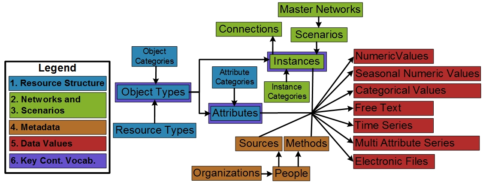
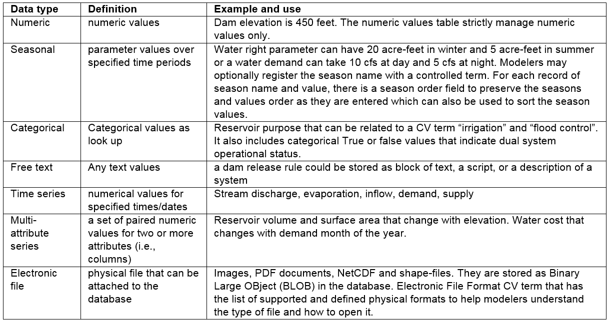

WaMDaM Information Model¶
For the first six design features, we use the Unified Modeling Language (UML) to represent the relationships among data and metadata elements. The UML shows the hierarchy of entities grouped to align with the six design features (Connolly and Begg, 2010) (Figure 2). Next, we discuss each group and the relevance of its components to water management data. We refer to the key information model entities using capital letters.
Information Model Concepts and their description¶
 Figure 2: Conceptual diagram relating the first six design features into the water management information model constructs. Key controlled vocabularies are introduced to the boxes outlined in purple. The “Category” boxes for Object Types, Attributes, and Instances are not shown for simplicity
Dataset Structure¶
Extensible Data Structures (Feature #1) are supported with Datasets, Object Types, and Attributes (Figure 2, blue entities) that users can define and customize. A Dataset can represent types of input or output data in a Model Program (Morsy et al., 2017) like WEAP or a dataset or resource (Tarboton et al., 2014) like US dams shapefile dataset, or Excel files independent of implementation. An Object Type is a system component (e.g., reservoir, canal, water source, or demand site) and can have one or more quantitative or qualitative Attributes or properties. An Object Type can be specified (i.e., implemented) for zero or more locations as Instances (e.g., Hyrum Reservoir).
Optionally, users may relate or group one or many Object Types into a Category they define. The Category is a grouping and can be used to query and filter a group of Object Types within the same Dataset. For example, the “supply” Category can group all Object Types within the dataset that share a water supply purpose. Similarly, for Attributes, “Cost” and “Hydropower” can be used to group a set of attributes of an Object Type. In future work, a more sophisticated hierarchical grouping within the Category itself (also referred to as ontology) (Uschold and Gruninger, 2004) can help answer more specific use cases.
Optionally, to group many Object Types that share a common classification, users may relate one or many Object Types into a defined Category. The Category defined here, is a simplistic grouping and can be used to query and filter a group of Object Types within the same Dataset. For example, a “supply” or “demand” Categories can group all its Objects. Similarly, for Attributes, “cost” and “Hydropower” can be used to group a set of attributes of an Object Type. A more sophisticated hierarchical grouping within the category itself (also referred to as ontology) (Uschold and Gruninger, 2004) is out of the scope of this work and maybe improved in future work to meet additional specific use cases. This capability to build data structures meets the first design requirement to be modular and extensible to represent systems components.
Networks¶
Networks of nodes & links (Feature #2) and scenarios & version control (Feature #3) allow users to implement a Dataset Structure as specific Instances in a particular area (Figure 2, green entities). Networks and scenarios also allow users to track changes in topology and data values. An Instance inherits the properties of its parent Object Type. An Instance may be geo-referenced as a node in space with longitude and latitude coordinates or as a link, that has start and end nodes.
We use the general concept of Instance to refer to nodes and links because both Instances have similar descriptions except that the link must reference a start and end node. Multiple node and link Instances may belong to a Scenario and represent a particular topological relationship (e.g., existing vs proposed infrastructure). Relevant to extensibility in Feature #1, many Scenarios can belong to a Master Network where a Network represents all the nodes and links that exist across its Scenarios (i.e., sub-networks). Similar to the grouping of Object Types and Attributes, a Category can group a subset of node or link Instances of an Object Type. For example, “Riverine” or “Floodplain” Categories may apply to particular links (not all) of a “stream” Object Type as in the WASH Model.
Metadata¶
An Organization can have many People and a Person can create one or many Methods or Sources (Feature #4) (Figure 2, orange entities). Besides the Attribute name that represent “what” and the Instance name that represent “where”, WaMDaM supports four essential key metadata to interpret data values: i) the Source of the Data Value (i.e., one source or method for the time series values) and ii) the Method used to create the Data Value and its type (e.g., how measured, derived, modeled). Further, the iii) Organization and iv) People who created the element Data Value as part of the Source and Method. People and Organization may differ for Sources and Methods. For example, “the United States Geological Survey (USGS)” is the Organization that served the Source to the US Dams Dataset. The US Army Corps of Engineers is the Organization who created the Method to estimate dam elevation in the US Dams Dataset. Lastly, iv) WaMDaM requires the Unit of Data Values as property to an Attribute at the Object Type level, which enforces the same Unit for an Attribute of all Instances. Thus, WaMDaM enforces unit consistency across Instances of the same Attribute as required by most of the investigated models. Specifying methods and Sources is also required for each node or link instance. A direct metadata support for Attributes and Instances guides users to consistently document, access, and reuse metadata for each of them. We recognize that there is a potential for a more complex or specific representation of metadata as in ODM2 and the Dublin Core Metadata Initiative (Horsburgh et al., 2016). However, too much metadata can discourage users and too little metadata can be insufficient to correctly interpret data. We attempted to balance between the principles and practicality of metadata usage as recommended by Duval et al. (2002).
Data Values¶
Similar to the Unit, each Attribute of an Object Type has one Attribute Data Type (dual values, numeric, seasonal, etc.) that applies to all the Object’s Instances. The Mappings bridge table connects the Attribute with an Instance and its DataValues through the DataValuesMapper bridge table (Feature #5) (Figure 1 red entities; Table 1). Data Values are organized and accessed separately based on their Type to reinforce the persistency and guide users to only populate or query relevant data values.
Table 1: Supported data types, their definitions, and examples in water resources systems models (Feature #5) 
Controlled Vocabulary¶
Controlled vocabularies (Feature #6) encourage modelers to use common terms for key Object Type, Attribute, and Instance entities (Figure 2, purple outlines). Users may retain their own native terms for each Instance and have the option to relate native terms to suggested Controlled Vocabularies to cross-reference and support searching. For example, the controlled term “reservoir” relates the native term “water body” used by the USGS Dataset a second native term “dam” used by the US Army Corps of Engineers dataset. Thus, a query for “reservoir” can return data for instances with the native terms reservoir, water body, and dam.